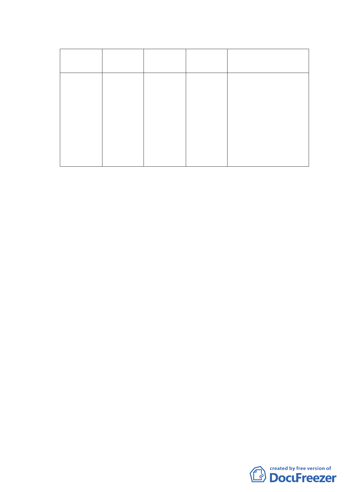

（三） 主要計畫變更內容：
變更位置 原計畫
南港區新 農業區
新計畫
機關用地
變更面積 變更理由
(m2)
3270
1.配合政府生技產業
光段一小
推動，衛生署設置
段 119 、
「生醫管理中心」
15-3 、
第二期計畫。
137 、 138
2.配合南港區鐵路沿
地號全部
線都市更新整體發
面積
展政策，促進沿線
（四） 實施進度與經費
土地開發。
1.土地取得方式與徵收經費
（1）變更範圍內公有土地以撥用方式取得，私有土地部分將
由衛生署以協議價購方式取得，如協議不成，則採一般
徵收方式進行。
（2）土地徵收經費約31 萬，由衛生署編列預算。
2.實施進度
「生醫管理中心」採分期分區開發，分二期完成。本
次變更範圍位於第二期發展區範圍內，預計民國101 年完
成一期興建工程後開始規劃興建，至民國106 年完工。
3.開發經費
「生醫管理中心」第二期「生技大樓」開發計畫所需
經費，包括實質計畫規劃、用地取得、公共工程規劃設計、
施工監造等，本案所需經費預估約為新台幣 20 億元，經
費由行政院衛生署逐年編列。
四、 法令依據：都市計畫法第 27 條第 1 項第 4 款。
五、 申請單位：行政院衛生署。
六、 辦理機關：臺北市政府。
七、 本案審議歷程：市府（都市發展局）於 98 年 10 月 15 日以府
都規字第 09835785000 號公告，98 年 10 月 16 日起公開展覽
30 天。
- 15 -